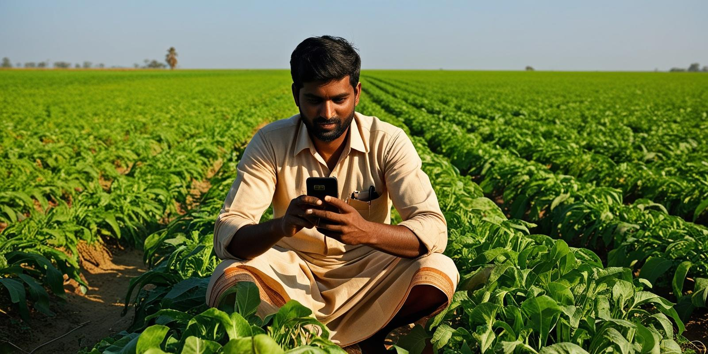

Welcome to Krishimitra
कृषिमित्र में आपका स्वागत है
कृषिमित्रमध्ये स्वागत आहे | కృషిమిత్రకు స్వాగతం | কৃষিমিত্রে আপনাকে স্বাগতম | கிருஷிமித்ரா வரவேற்கிறது
Select Your Language
English
हिन्दी
தமிழ்
বাংলা
ગુજરાતી
कृषिमित्र |
KrishiMitra
| கிருஷிமித்ரா | কৃষিমিত্র | કૃષિમિત્ર
Empowering Farmers
Enter
KRISHIMITRA
Bridging Technology and Farming
Services
Market
Support
Upskills
Contact

❮
❯
AI-Powered Job Listings for Farmers
Choose Your Skill:
Select Skill
Crop Management
Soil Health Management
Irrigation Techniques
Farming Technology
Organic Farming